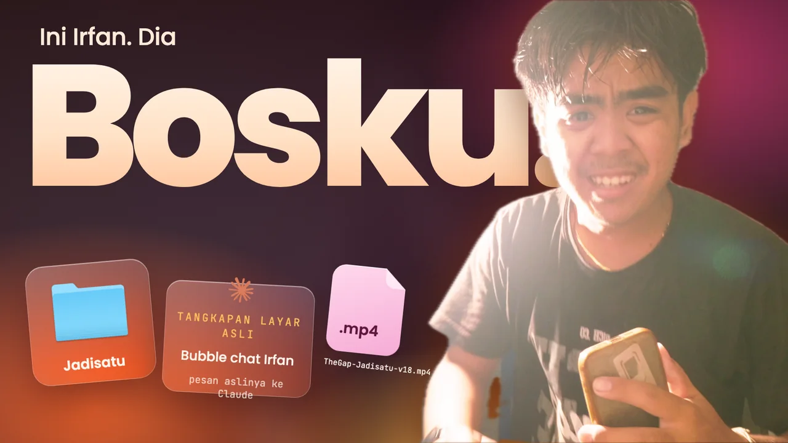

B010,0–1,6 dtk1,6 dtkN · Narator
VO: “Ini Irfan. Dia bosku.”
Video lampu menyala main sebentar, lalu beku di “bosku”. Irfan jadi cutout di depan kata raksasa “Bosku.” (huruf terakhir masuk ke balik kepalanya). Di depan Irfan melayang tiga kartu kaca: folder Jadisatu, file TheGap-Jadisatu-v18.mp4, dan bubble chat asli Irfan.
- Teks layar
- Ini Irfan. Dia · Bosku.
- Kamera
- Push-in pelan 100→108%
- Transisi
- Cut
- SFX
- Klik saklar tepat di frame lampu menyala; musik masuk fade 60 ms
Cutout broll_lampu_awal 6,2 dtk (4K). Ikon folder asli macOS.
Masih placeholder, perlu tangkapan layar asli: Bubble chat Irfan di Claude